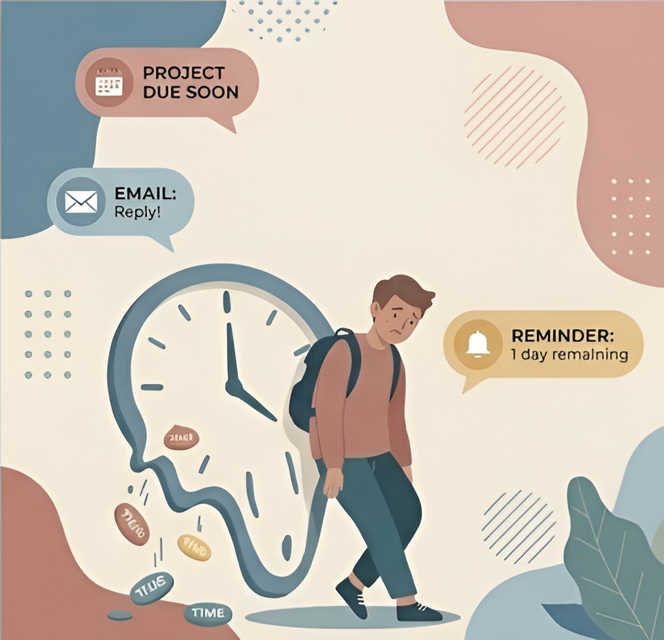

דחיינות וניהול זמן
דחיינות היא לא עצלנות – היא פעמים רבות תגובה ללחץ, חרדה או תחושת עומס. למדו כיצד לשבור את המעגל ולנהל את הזמן שלכם ביעילות.

מה באמת גורם לדחיינות?
האם אני דחיין/ית? בחנו את עצמכם:
- אני מחכה ל"רגע האחרון" כדי ללמוד למבחן
- אני מוצא/ת את עצמי מנקה את החדר במקום לכתוב עבודה
- אני נכנס/ת ללחץ רב בגלל דברים שדחיתי
אם סימנתם לפחות שני משפטים - הגיע הזמן לאמץ שיטות ניהול זמן חדשות.
טכניקות לניהול זמן
הנה כמה שיטות מוכחות להתמודדות עם דחיינות
שיטת פומודורו (Pomodoro)
למידה במקטעים קצרים וממוקדים של 25 דקות, שלאחריהם 5 דקות הפסקה. השיטה מפחיתה שחיקה ושומרת על מיקוד. נסו בעצמכם:
רשימת משימות חכמה
פרקו מטלות גדולות לתת-משימות קטנות וברורות שניתן לסיים ב-30 דקות או פחות.
בלוקים של זמן
שריינו ביומן "פגישות עם עצמכם" המוקדשות ללמידה בלבד, ללא הסחות דעת.
קביעת סדרי עדיפויות
השתמשו במטריצת אייזנהאואר - טפלו קודם במשימות החשובות והדחופות ביותר.
בניית הרגלי למידה (Habit Tracker)
עקביות מנצחת אינטנסיביות. במקום ללמוד 10 שעות רצוף לפני המבחן, נסו לסגל הרגלים יומיומיים קטנים.
מעקב הרגלים שבועי (דוגמה)
| הרגל | א' | ב' | ג' | ד' | ה' |
|---|---|---|---|---|---|
| קריאת חומר רקע (30 דק') | V | V | - | V | - |
| תרגול מתמטיקה | - | V | V | - | V |